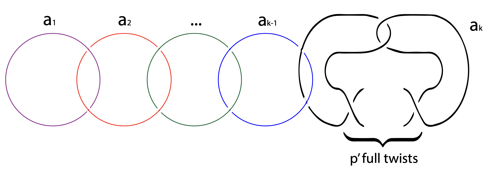

Chuwen Wang [汪楚文]'s website
 |
Chuwen Wang
Ph.D candidate chuwenwang [at] ruc [dot] edu [dot] cn Office: SIRM Room 105 and SM Room 308
59 Zhongguancun Street, Haidian, Beijing, China |
About
I'm currently working in the areas of geometric topology and hyperbolic geometry, especially topics related to knot theory, Volume Conjecture, and Thurston's geometrization conjecture. I also occasionally explore the geometry of anti-de Sitter (AdS) spaces. Beyond that, I have a growing interest in algebraic geometry, homotopy theory, and representation theory—particularly K-theory, quantum groups, and ribbon Hopf algebras. On the side, I enjoy thinking about ideas from mathematical physics, like the AdS/CFT duality, Chern-Simons gauge theory, and topological quantum field theory (TQFT). These fields may seem quite different at first glance, but I'm always fascinated by the unexpected connections between them.
Education
Ph.D , Pure Mathematics, Renmin University of China, 2022
B.S. , Pure Mathematics and Applied Mathematics, Renmin University of China, 2018
Publications
Volume Conjecture for hyperbolic rational Dehn-filled 3-manifolds along the twist knots
joint work with Huabin Ge, Yunpeng Meng, Yuxuan Yang
arXiv:2410.20489 [math.GT], 2024
|  |
A proof of Atiyah-Floer Conjecture
Chuwen Wang, ---
in preparation
Cyclotomic Expansion of the Colored `SU(n)` Invariants of Torus Knots
Chuwen Wang, ---
in preparation
On the Rigidity of 3-manifold in the 3-dimensional anti-de Sitter Space
Chuwen Wang, ---
in preparation
Talks
| Date | Title | Conference | Link | Slide |
| 2021/12/25 | An Introduction to Colored Jones Polynomial | Mathematical Seminar [Renmin University of China] | Click Here | / |
| 2024/10/20 | On the Volume Conjecture for hyperbolic rational Dehn-filled 3-manifolds along the twist knots | 006 Recent Progress on the Volume Conjecture [Institute for Theoretical Sciences, Xihu University] | Click Here | Click Here |
| 2025/03/13 ~ 2025/03/17 | Recent advances in the Volume Conjecture | Geometric topology and their related topics [Tsinghua Sanya International Forum M250302] | Click Here | / |
Activities
| Date | Conference | Location |
| 2022/07/18 ~2022/07/28 | Xiamen University geometric analysis Summer School | City Hotel Xiamen [Xiamen, China] |
| 2023/07/04 ~ 2023/07/08 | Xiamen Geometric Topology Conference | Sea Lilt Park of Xiamen University [Xiamen, China] |
| 2023/08/20 ~ 2023/09/12 | An academic visit to Fudan University | Fudan University [Shanghai, China] |
| 2023/10/21 ~ 2023/10/22 | Beijing Geometry Day-Tsinghua University | Beijing Jin Yu Fengshan Hotspring Restort [Beijing, China] |
| 2023/03/29 ~ 2023/03/31 | Beijing Geometry Day-Beihang University | Beijing Kuangou Conference Center [Beijing, China] |
| 2024/06/29 ~ 2024/06/30 | The 4th Xi'an Geometric Topology Conference | Xi'an Jiaotong University [Xi'an, China] |
| 2024/07/06 ~ 2024/07/07 | Quantum topology skein algebra seminar | University of Science and Technology of China [Hefei, China] |
| 2024/07/22 ~ 2024/07/27 | 2024 Geometric Analysis Annual Conference | Maison New Century Hohhot [Hohhot, China] |
| 2024/07/27 ~ 2024/08/03 | 2024 NKU Summer Short Course | Nankai University [Tianjin, China] |
| 2024/09/18 ~ 2024/09/23 | 2024 Differential Geometry Youth Forum | Xitang Ancient Town [Jiaxing, China] |
| 2024/10/20 | 006 Recent Progress on the Volume Conjecture | Institute for Theoretical Sciences, Xihu University [Hangchow, China] |
| 2024/11/09 ~ 2025/11/10 | Beijing Geometry Day-Renmin University | Fragrant Hill Hotel [Beijing, China] |
| 2025/03/13 ~ 2025/03/17 | Geometric topology and their related topics | Tsinghua Sanya International Forum [Sanya, China] |
| 2025/04/05 | Beijing Geometry Day-Beijing Institute of Technology | Beijing Friendship Hotel [Beijing, China] |
| 2025/05/09 ~ 2025/05/12 | Fudan University PhD Exchange Meeting | Fudan University [Shanghai, China] |
Photography
TO DO